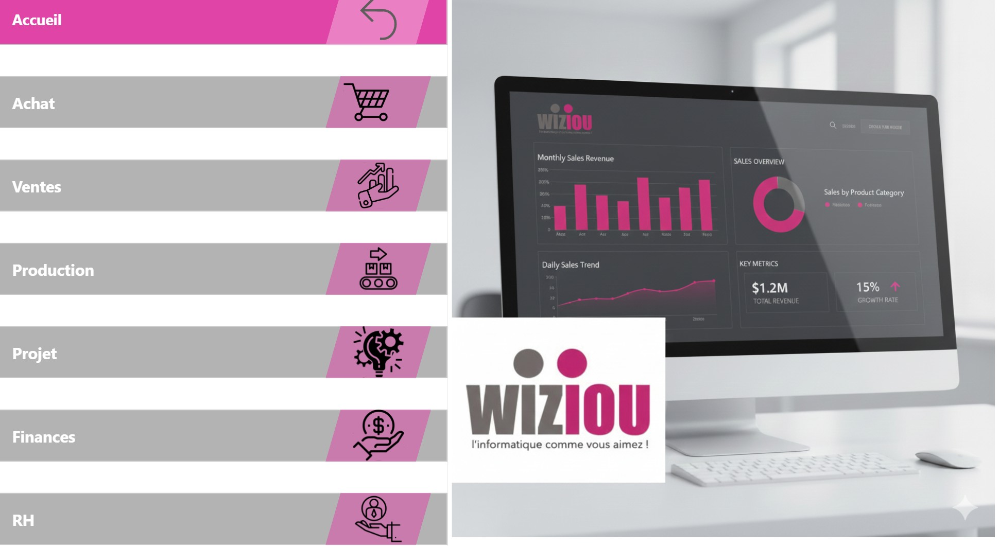

Aperçu de la solution

Vue d'ensemble d'un rapport interactif Power BI : suivi des KPI, analyses comparatives et filtres dynamiques.
Contexte & Problématique
Les entreprises disposent souvent de volumes importants de données dispersées entre différents logiciels (ERP, CRM, fichiers comptables). Sans outil centralisé, l'extraction de métriques clés exige un travail manuel lourd et ralentit la prise de décision.
L'objectif de ce projet était de concevoir un modèle complet et standardisé de tableaux de bord Power BI, entièrement personnalisable et rapidement déployable chez les clients pour leur offrir une vision claire à 360° de leur activité.
Domaines Métiers Couverts
📊 Ventes & Commercial
Analyse du chiffre d'affaires, suivi des objectifs commerciaux, marges par produit/client et identification des meilleures ventes.
🛒 Achats & Approvisionnements
Suivi des dépenses par fournisseur, gestion des volumes de commande, évaluation des délais de livraison et négociation des prix.
⚙️ Production & Stocks
Analyse des rendements industriels, taux de rotation des stocks, suivi de l'obsolescence et optimisation du besoin en fonds de roulement.
💰 Finance & Trésorerie
Suivi du compte de résultat, suivi du besoin de trésorerie, balances âgées clients/fournisseurs et suivi des coûts de structure.
👥 Ressources Humaines
Pilotage de la masse salariale, suivi du turnover, taux d'absentéisme et indicateurs de suivi des effectifs.
⚡ Modélisation & Performance DAX
Mise en place d'une modélisation solide en étoile, de tables de temps personnalisées et de mesures DAX complexes (Time Intelligence, YoY, YTD).
Bénéfices & Résultats
- Prise de décision rapide : Accès instantané à des indicateurs mis à jour automatiquement sans manipulation Excel.
- Personnalisation sur mesure : Structure modulaire permettant d'activer uniquement les volets métiers nécessaires à chaque client.
- Sécurisation & Droits d'accès : Mise en place de la sécurité au niveau des lignes (RLS) pour restreindre l'affichage selon le rôle de l'utilisateur.